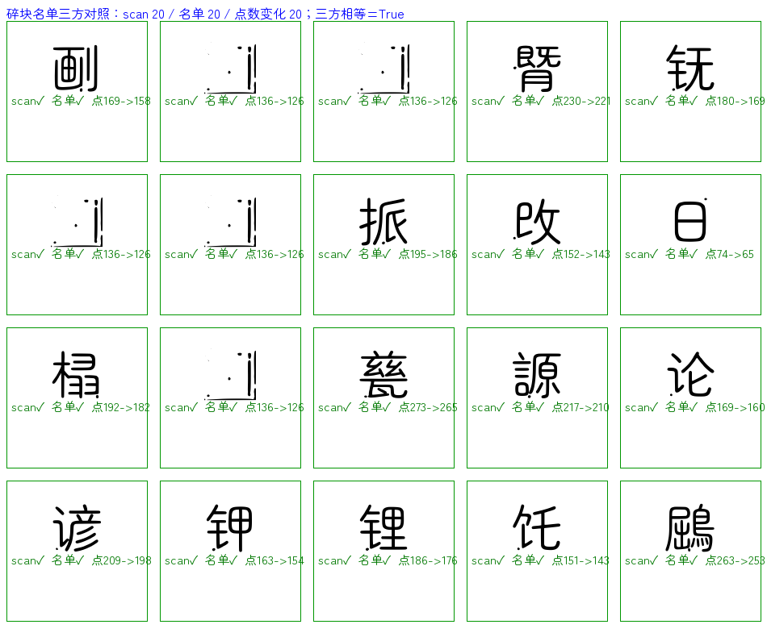
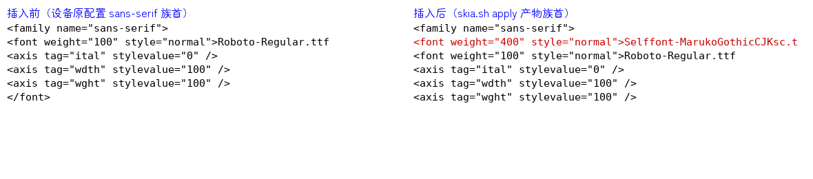
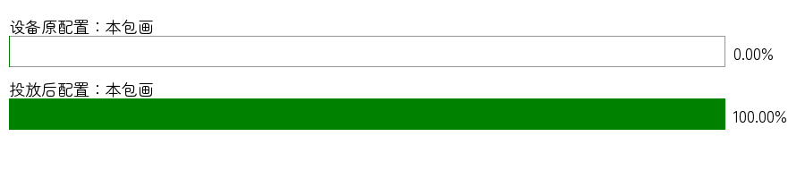
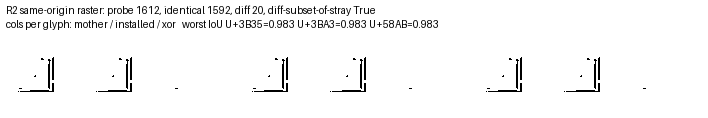

三张图均为命令副产品落盘（复算：tools/draw_round30_proof.py），sha 与字节见下表。
本页面由静态图服在预览窗根路径提供，像素即落盘文件本身，未经任何重绘。




| 文件 | 字节 | sha256 前 8 位 |
|---|---|---|
| 2026-11-27-r2-worst.png | 5285 | 062c5035 |
| 2026-11-26-roster-20.png | 70,990 | 7d442021 |
| 2026-11-26-insert-before-after.png | 31,327 | b6a3139d |
| 2026-11-26-choose-0-100.png | 11,383 | ac86ae21 |
渲染层（真机屏幕）仍未闭合：R2 栅格化对照排下一轮 first line。